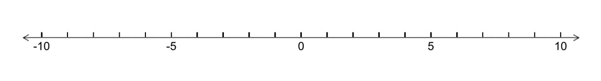
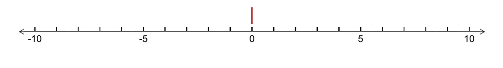
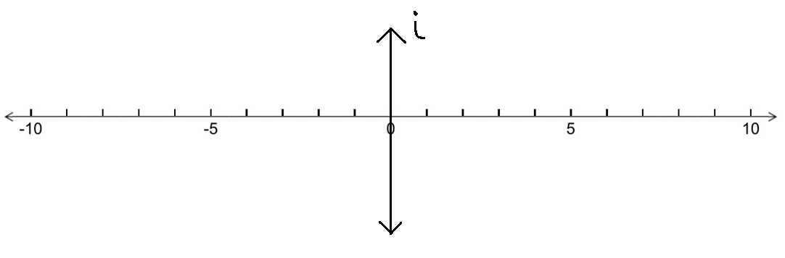

What it is, I don't know. But it's gotta be more than a better title.
.
I'm In-this-try ing to Learn CS
July 19, 2018
As a CS undergrad, you should try to learn a language that isn't used in industry. Sounds like crippling advice to me.
Don't get me wrong, I don't disagree with this. I agree to some extent. Also, I don't mean to offend the person who said this. (I actually greatly admire him.) It just seems counterintuitive at first.
I guess it's because, from my perspective, going to college for a CS degree means gaining the skills necessary to work in industry. I.e. college is a job-preparation thing for students pursuing a CS degree.
The opposite would be college is a place for learning as much as possible for the sake of learning rather than for the sake of getting a job. Being a Math-CS major, I've experienced both sides of the spectrum.
I say it's crippling advice because I imagine telling CS students to learn a language not used in industry and seeing them balk at the idea. They would probably call it a waste of time because they could've used that time to learn something "useful". Or maybe they would say that it makes them undesirable because they know some no-name language while everyone around them is scribbling away in Python, Java, C, C++, Javascript.
Ultimately, my thoughts are shaped by - what I think is - the state of CS in college. Everyone's trying to be better than the next CS student so they can get a job in industry. And how do they get a job in industry? By working with the tools used in industry. After all, if you're a company working primarily with Java, you would want to hire someone experienced in Java. I presume.
And, also, if we don't get a job by the time we graduate, our lives are officially over. Heh.
Brought To You Today By the Number 9 (and by the letters C and S)
July 18, 2018
For the past 3 weeks, I've been riding my skateboard or bike - depending on the week - to get the mail. This week is skateboard week. Today, however, I came home a bit late and decided to walk instead.
My skateboard is kinda loud already and riding over cracks in the sidewalk just makes it even louder. It was a little after 8:30, so I thought maybe there were children sleeping - or getting ready to go to sleep. (I suspect that the area I live in is half families and half students.) I have no idea if that is true; I only thought that because I remember I had to go to bed around 9 when I was younger.
It was about 10-13 years ago, but I remember that because I would lie in bed and stare at my digital clock. It wasn't because I couldn't sleep; it was because I was doing mental math with the numbers on the clock. Specifically, division. I don't remember if I liked doing division or not, but, for some reason, I stayed up doing it. The numbers were aligned so that I could imagine a division bar (whatever it's called) between the hour and the minutes and do division by 9.
I did this so often that I eventually came up with an algorithmic way of dividing (two digit) numbers by 9. It went something along the lines of: the first digit of the quotient is going to be the first digit of the dividend. So, for 23 ÷ 9, the first digit of the answer is going to be 2. For 34 ÷ 9, the first digit of the answer is 3. I was excited about my discovery until the time was something like 9:29.
I modified my algorithm: if the digits of the dividend add up to 9 or greater, then the first digit of the quotient is going to be 1 greater than the first digit of the dividend. So, for 29 ÷ 9, the first digit of the answer is going to be 3, since 2 + 9 = 11 ≥ 9.
For the second digit, it was the sum of the digits of the dividend. So, for 23 ÷ 9, the in-progress answer would be 2.5 since 2 + 3 = 5. For 34 ÷ 9, the in-progress answer would be 3.7 since 3 + 4 = 7. For edge cases, like 29 ÷ 9, the in-progress answer would be 3.2 since 2 + 9 = 11 and 1 + 1 = 2. For 58 ÷ 9, the in-progress answer would be 6.4 since 5 + 8 = 13 and 1 + 3 = 4.
I don't think I was able to stay up after 9:58.
It was by creating that algorithm (especially the second digit part) that I inadvertently memorized single digit division by 9. 1/9 = .111..., 2/9 = .222..., 7/9 = .777...
What I didn't realize - until now (almost literally) - was that I was using fundamental computer science concepts in creating my algorithm. Well, first of all, by creating an algorithm. But also by using "if statements" for special cases. And also by generalizing the algorithm so that it worked for any digits. It worked as long as I was in bed and awake between 9:10 and 9:59 anyways.
It wasn't a very useful algorithm. (I'm pretty proud of it though lol.) But it was fascinating to me at the time. What's most surprising to me is that I developed that way of thinking with no exposure to computer science. Well, whatever computer science is.
Recently, I was asked to proofread an essay to check for grammatical errors. My friend has always been asking me to do so throughout high school and college. And it's always been the same every time: receive his horrible essay by email and trudge through it, stopping every few seconds to cry as I try to understand what he's saying and see how to fix it.
Joking aside, this time was a little different. I only cried every few minutes. Ok, no more jokes.
(On an unrelated note, it was different for another reason. When I proofread my friend's paper, I sometimes tease him through my comments only because he knows I'm not really making fun of him. What I didn't know was that this was my friend's friend's paper. Oops.)
This time was different because one of the first thoughts that popped into my mind was functional programming.
Having been working with Racket for the past 3 weeks, functional programming has been on my mind lately. I'm still not sure of what functional programming is actually. I guess it's partly because I'm a little uncomfortable with functional programming. I still prefer imperative programming, but only because I've been doing it for the past 4 years. My mind may change.
The reason I thought of functional programming when asked to proofread for grammar was because I thought they were related. Pretty closely related. I think successfully working with them follows from knowing how to visualize the structure of their elements. (Though that could be said of almost any subject really.)
Racket is driven by parentheses. Thus, getting programs to work correctly requires knowing where to put them. (For some students, it's been knowing how many parentheses are needed.) In fact, it's probably the main source of problems among students. At first, the biggest issue is missing the ')'. But, later on in the week, it becomes putting the ')' too early, cutting off the rest of the code and causing it to not show up on the program.
Because of it's list-like nature, it's very easy to get lost in the code and see where you have to put the ')'. Knowing how to visualize the pieces of code might possibly solve ~99% of problems involving parentheses. (The 1% is knowing when to start code with '('.) By knowing when to close off parentheses, you start seeing a Racket file as pieces of code put together rather than one long wall of code.
Grammar is also very dependent on structure. The biggest fundamental mistakes I think are issues with incomplete sentences and run-on sentences. Being able to visualize sentences as parts solve* these - and many others - issues. Specifically, being able to recognize the subject(s), verb(s), and modifer(s). (*I intentionally made a grammar mistake in the third sentence of this paragraph to prove a point. I intentionally made a grammar mistake in the fourth sentence of this paragraph for style reasons. #grammar_rules) Yeah, I enjoyed making sentence diagrams in my English class.
In terms of Racket, incomplete sentences would be closing off parentheses too early and run-on sentences would be not knowing when to close off parentheses.
I don't necessarily think being good at grammar implies being good at (functional) programming and vice versa. Actually, I would be surprised if there was some correlation. I do think being good at visualizing pieces of the whole will help in understanding what is going on though.
"There is a difference between 'creepy' and 'disgusting'."
A friend said that today in response to an amusing (not serious, not inappropriate) situation. That sentence immediately brought back a memory of one of my most thought-provoking experiences that had been unintentionally suppressed for several years.
I know I said it was one of the most thought-provoking experiences, but I unfortunately don't remember a lot of the details. I do remember it happened in my AP English Language and Composition class. On that day, we got back our papers. I don't remember the topic, but it had something to do with analyzing the author's choice of word usage. Specifically, why the author chose to use two different words when they both had the same meaning. I really wish I could remember those words right now.
They were pretty much synonyms, so that's what I wrote in my paper. One had a slightly more subtle darker/negative connotation I think, but, to me, they meant the same thing.
"Why are there two different words for the same thing then?" That's more or less what my teacher wrote on my paper in his messy-but-readable, authoritative handwriting. I was mind-blown. It got me thinking about how there are words that are interchangeable because they mean the same thing and why they even exist in the first place. Like, why did we need to have multiple versions of the same word if that word was perfectly fine to use?
There might be an obvious difference between "creepy" and "disgusting". I don't really know how to explain what the difference is, but I guess one would be more appropriate in different situations. Regardless, my initial, immediate mental response to my friend's statement was, "Yeah, they are two different words for a reason."
Here's an interesting experiment. Answer polar questions (yes-no questions) with only "yes" or "no". That's it. No extra justification or additional confirmation. Just "yes" or "no". Sounds simple enough, doesn't it?
Yes.
Isn't it weird how we answer "yes" to questions with "not" when we are actually answering the question without the "not"?
"Yes".
.
The Point of Some Return
June 21, 2018
The concept of "return" is a difficult one. To understand and to explain.
When I first started learning how to code, I did not understand what return meant. No matter how many times the professor went over it (he wasn't bad!), I just couldn't wrap my head around it. I don't remember exactly - or even vaguely, for that matter - what words he used to explain what return does. I do remember the context in which it was introduced though.
public int addTwo(int x) { int y = x + 2; return y; }
Not the exact example, but something more or less like this was on the slides. Just a random function that did something and returned a value. Whatever return meant. If I had to guess, I imagine the professor explained return by saying it "passed back the value" or "sends the value back" or something. Back WHERE?? WHERE did the value go when it was "returned"?
The curious thing about explaining return is that it's really hard to explain in words without restating the definition of return.
Of course, the concept of return totally makes sense to me now. But I still don't really know how to explain it. In words anyways. If I had to try to explain it, I would probably give an example and hope that it makes sense.
public int addTwo(int x) { int y = x + 2; return y; } int a = addTwo(3);
Or in Python: (Which might be easier to understand)
def addTwo(x): y = x + 2 return y
a = addTwo(3)
In either case, a is equal to 5.
Seeing that extra line at the end (a = addTwo(3)) along with the function definition is when I finally understood return.
Hmm. Now that I think about it, I could explain return without restating the definition. I would say that return is the output of a function. Besides being a piece of code that is reused to perform a task - or being something that does something - a function could be (seen as) a machine that takes in an input and spits out an output. Return is what does the spitting out.
I’m a math major, so a problem like “What is (2+3i)(3+4i)” shouldn’t be too hard right? (Well, one doesn’t have to be a math major to know this). Solving this, I get:
I, along with students learning about imaginary numbers could just tell you that i2 is actually equal to -1.
The operative word being just.
Why in the world is i2 = -1? I don’t know - it just is.
I’ve never really thought about what ‘i’ was. That’s why I feel so weird.
I’ve never really thought about why i2 = -1. That’s why I feel so unknowledgeable.
I don’t really know how to explain why i2 = -1. That’s why I feel so helpless.
These emotions are bouncing around in my head in my Practicum in Math Tutoring class. When we were told about “learning with meaning”, I was not expecting to feel this confused. Especially, for a topic that would normally be covered in 10 minutes (unfortunately). But this confusion only fueled my desire to realize the imaginary numbers.
There's a constant battle in my head between "There must be an intuitive reason why i2 = -1" and "It just is. That's the way you learned it, and that's how it shall be learned." Learning with meaning versus rote learning. It's so easy to end the battle now and give the victory to "that's the way things are".
Though not deserving of the win, the latter is seemingly effective. Why spend so much time explaining why things work, when it takes so much less time to present as is? There’s only so much time to make sure these students pass these tests! It was certainly the mindset my AP Calculus teacher in high school adopted.
He wasn’t a bad teacher. In fact, he was the exact opposite. Every student who has had him as a teacher will say that he is very smart, dedicated, hard-working, and caring. What other teacher would go to great lengths to provide us with notes he wrote himself to make calculus easier to read? What other teacher would make hundreds of copies of past AP exams for us to practice? What other teacher would write his own “handbook” and give them to us as study aids?
We were learning calculus because of his efforts. For the past 9 years, more than 100 students, each year, have passed the AP exam, with an average of 127 students passing. His total class size each year was 150 or less. Surely, we were learning.
With his dedication and concern for our success, it was obvious that there was nothing he would rather do than teach. Watching him and experiencing the results for myself made me feel the same way. I felt like I could’ve been in his shoes. And I wanted to too. Oh, except for the fact that I (then) hated public speaking.
I’m still not great at it, but I’ve grown more comfortable with speaking in front of a crowd. So much so, that I recently realized the chance to help others have the same learning experience I did overshadowed my (now) dislike of public speaking. And that was before I experienced learning with meaning.
So, what exactly is the “meaning” in “learning with meaning”? It is:
Drawing a number line

Reminding that an arrow starting from 0 and pointing to 1 is “stretched” 5 times its length when multiplied by 5, and stretched in the other direction when multiplied by a negative number (or a rotation 180° counter-clockwise)
Asking “What number multiplied by itself twice gives -1?”
Showing that the arrow starting from 0 and pointing to 1 can be rotated 180° counter-clockwise to point to -1 by multiplying 1 by a number (-1) once to get to -1
Showing that the arrow starting from 0 and pointing to 1 can be rotated 90° counter-clockwise, then rotated another 90° counter-clockwise to get to -1
Realizing that one rotation is one multiplication (from step #2) and two rotations is two multiplications (almost answering step #3)
Showing that when the arrow rotated 90° counter-clockwise, it pointed upward - not to any number on the number line. Not to anything in particular actually.

Drawing a vertical number line extending upwards and downwards from that arrow and introducing it as the imaginary number line

Showing again that the arrow starting from 0 and pointing to 1, when rotated once 90° counter-clockwise (one multiplication), points to some imaginary number, call it i
Reiterating that one 90° rotation was multiplying by i, so another 90° rotation is multiplying by i again
It’s certainly a lot easier to just say i2 = -1, isn’t it?
All of a sudden, the battle in my head ceases. The confusion fades away and is replaced by a newfound sense of empowerment. It’s a curious feeling. A little unusual, but also a little familiar. It’s the void of cluelessness and helplessness being filled with knowledge. Knowledge I never knew I needed.
So I rode a road bike for the first time today. It was absolutely amazing. And terrifying.
Which came as a surprise to me. I learned how to ride a bike when I was like 7 or something. I've been cycling semi-seriously for maybe 7 years? Not 7 years straight, but within that time frame. And yet, riding a road bike was scary.
Maybe it's because I've been riding a mountain bike all those years. For those who don't know, mountain bikes generally have thicker wheels, so it's easier to ride on different types of terrain. Road bikes have (very) thin wheels because they're meant for riding fast on flat surfaces, like roads. Can you imagine balancing your life on two wheels about as thick as your thumb?
Not to mention I was riding pretty fast. Faster than I was used to anyways. Not on purpose. Road bikes are built to go fast. It's sort of like driving on the freeway for the first time. You know what to do, but the prospect of getting into an accident is pretty scary considering the fact that you're driving at such high speeds.
I guess I'll have to get used to it. It's certainly a lot better than my old bike. Not just because it was a mountain bike, but because it was from Target. The main problem, for me anyways, with bikes from places like Target and Walmart is that they are heavy. Because they are built with cheap parts. They're only $200 after all.
Amazing and terrifying. A pretty good combo if you ask me.
Update (6/13): It took me 1 hour and 30 minutes to go 14.5 miles on my mountain bike. Google Maps estimates that it takes 1 hour and 15 minutes. I can do it in 1 hour and 5 minutes on my road bike.
.
Spring
June 6, 2018
Love is in the air. Weaving in and out. Bobbing up and down. Hitting me and then backing off. It hurts.
Is there something about spring that brings it out? Or am I breathing the wrong air in the other seasons?
Actually, it's not even love. It's something though. Something's messing with me.
Spring is coming to an end. So is "whatever" it is. Maybe it does have something to do with spring. Or maybe it's just the fact that the quarter is ending. I don't know if I like it, but it'll probably come back.
I'll probably not be ready for it either. I've never really been good at boxing.
.
In Response To High School Culturalism
May 23, 2018
I've been struggling with this a lot lately. Why do students not care about school? Granted, school isn't always fun. It isn't always easy. But isn't it important?
I would think so, but I feel like I was brainwashed to believe that. Not that that makes education unimportant. But I feel like one of the reasons I thought education was important was because everyone else was doing it. At least in high school anyways. Before high school, education was important because if I did badly, I would get in trouble with my parents. (Which was actually still the case in high school, but less important to me by then.)
Probably two of the dumbest reasons why school was important to me. Especially considering the fact that for my whole life, I've been told by many people that education is the key to success. The key. Presumably, to a door. But what's behind that door? Well, yeah, success. But if I opened that door, what would I see? What does success look like?
That's the problem isn't it?
I guess that's why success was never one of my motivations to do well in school. I had no idea what success meant for me. I imagine that might be the case for other students as well. Or maybe I'm wrong.
But that's what I want to know.
Why do students not care about school? I thought I had it figured out. School is forced upon us, and we rarely like doing things we're forced to do right? School is boring, and we would much rather just be on our phones and hanging out with friends right? Growing up in my community, that's the vibe I got from the people around me. I'm not saying that's how they actually were; I'm saying that's the message I got. In other words, it could all be a front.
Other people - wiser and more experienced - have told me something else. For many of the students, both of their parents are working hard to get by and expect/prefer their children to help pay for basic necessities too. Or their parents are too busy/stressed to remind their children that education is important. Either way, education becomes a lower priority. I can't relate, but understandable.
Another reason popped into my head recently as well. A lot of non-career (for lack of a better term) jobs don't really require an extensive education. Only basic reading, writing, and arithmetic. Which are learned pretty early on. I mean, disregarding the requirement for a disploma, you don't really need to finish high school to be able to work in a restaurant or a store.
I've sorta thought about this before, but it's never really had a big impact on me until now. I'll admit, it's not easy helping other students when they "clearly" don't wanna be there. I don't expect them to pretend to care just for me - or any other teacher/tutor for that matter. But if they aren't going to care, I would like to know why.
Free guitar lessons! Participate in a paid study! Need tutoring? Anyone looking at me would've thought I was actually interested in what those flyers had to say. Huh, yeah right. There was only one paper I was interested in.
Ah, there he is. Out of the corner of my eye, I see him leaving his room. I turn my head to look past him and stare intently at the door. The doorknob specifically. He doesn't lock it. As he turns around, I slowly turn my head back to look at the flyers. Thump, thump, thump. The wind blows by as he rushes past me. I pull out my phone and start walking towards his door.
As a precaution, I knock on it. No answer. Ok, let's open it. Creeeeaaaaaaaak! Oh my god. Why didn't it make this sound when it was closing? Resisting the temptation to look behind me, I slip in.
My eyes scan the room, taking note of where everything is placed. Whiteboard cleared of all writing. Chair pushed in all the way. A pile of papers neatly placed on the corner of his desk. Looks like this will be quick. I make my way over to the papers and quickly thumb through them, looking for my name. No... No... No...
Thump, thump, thump. What!? Is that him!? Oh my god oh my god. What do I do what do I do? I pull out the chair, hide under his desk, and pull it back in. Creeeeaaaaaaaak! Followed by complete silence. My whole body tenses up. I stop breathing. Please don't sit down. Please don't sit down. I don't hear anything. Suddenly, his hand comes straight at me. My heart punches my chest and my eyes widen as I let out a small gasp. His hand stops for a moment, but then reaches for a briefcase next to me. He grabs the briefcase and pulls it out, his hand disappearing with it.
Click.
I let out a huge sigh after he closes the door and my whole body melts into a pile of relaxation. I wait until I can't hear his footsteps anymore. Then I slowly crawl out from under the desk, as if making a sound will send him back in. I keep my eye on the door, half-expecting it to open at any moment. Thump, thump, thump. Oh my god, he's back! Quickly, I jump back under the desk, a loud bang echoing the room when I bash my knee against the table. Thump, thump, thump. Where is he?? Thump, thump, thump. Wait a minute, that's my heart. Getting out from under the desk again, I let out another huge sigh while massaging my knee and continue sifting through the papers. No... No... No... Maybe it's in the storage cabinets. I pull out the top drawer. Locked. Next one. Also locked. They were all locked.
Disappointed, but extremely relieved at not getting caught, I start to leave. I take one last look at the room behind me, searching for anything out of the ordinary. Then I open the door.
Creeeeaaaaaaaak! My heart nearly explodes and I jump up as I let out a startled gasp.
There's a mysterious attractiveness to her. I don't know why it's taken me so long to realize it. I guess the phrase "not immediately pretty" applies. Now that I say it, it actually sounds a bit degrading. No, she's always been pretty. What's not immediate is why. I never noticed the way her face attracts all the light in the room. Bending every wave. Redirecting every particle. Making her face glow.
Yet, at the same time, her face also seems to be reflecting the light. Like a mirror. Aiming the light at whomever she wants. But instead of blinding them, she casts a warm, soft glow, inviting the target to take in the beauty. And that target is me.
Is it possible she's doing this on purpose? Is she somehow able to control light like this to attract anyone she wants? Am I the only one who's noticing this?
Perhaps I'm being too hopeful. I mean, why me of all people? But the more I look at her, the more she seems to be redirecting the light at me. And she's doing this without looking in my direction. As if she knows that she has my attention, but wants to keep me hanging at the edge of my seat. Am I being too hopeful?
Finally she looks at me. I immediately look away, the way one does when caught staring. My face feels a little warmer. I can't tell if it's because I'm getting red or because the light is getting more intense. After a moment of embarrassment, I look back at her. Is it me or is her smile a little bit bigger? Not in a devious way, but in a relieved way. It makes her face even prettier. I can't help but smile too.
As I'm walking, I think about her face. The way it draws the light towards her and reflects it towards me at the same time. My heart flutters and skips a beat. I look behind me, hoping that she's around. Hoping I can see her face again.
I see her.
Her face is still as pretty as I last saw it. Still radiating. Still glowing. Except I don't feel the warm glow anymore. She's aiming the light at another guy. Another guy who's holding her hand. Basking in the warmth of her light. I look away, with mixed feelings in my heart. Sadness. Jealousy. A little bit of wistfulness. The world seems a bit darker without her face lighting it up. It's ok, it's not too dark. At least the sun is shining for him.
A woman is walking towards me. She looks at me. I start to open my mouth, the word "Hi" ready to jump out. Then she gives me a weird look. I close my mouth before the letter h escapes and walk past her, not saying anything. I'm confused.
Oh, right. My hair. I totally forgot about my haircut. I forgot it was ugly.
It's only been two weeks and, already, I feel normal. Even with the right side of my head shaved to a buzz cut and the left side mostly untouched. Actually, I feel more than normal.
I feel strangely confident.
Part of it is that I actually like this style. Which is weird. I don't think anyone would admit this hairstyle looks cool - much less get it. However, two people with whom I have familiarized myself have complimented it. Thank you very much. But not the response I was really looking for. I guess that makes the compliments so much more meaningful though. Perhaps there is some sort of beauty in this ugliness I have carved for myself.
The other part is, I finally feel like I have some sort of defining feature that makes me stand out. Not that I cut my hair for that reason, but it is a rather nice consequence. For a good part of my life, I just wanted to not be judged. I wanted to be just another person you saw and never thought about again. I wanted to blend in wherever I went, like another brick in the wall.
I never realized the light was so comforting.
.
Grammar Rules(!) (get it?)
May 11, 2018
I'm a grammar Nazi. Well, ok. I used to be. If you somehow stumbled upon this website and read my previous posts, you might think my grammar is a little lacking. I admit, my grasp on correct grammar rules and mechanics isn't as good as it once was. Not to brag, but my score on the English section of the ACT was 34/36. The point is, grammar came easily to me.
What I liked about grammar was all the rules. A comma must be placed before a conjunction separating two independent clauses. A dependent clause cannot stand alone as a sentence (incomplete sentences). A sentence cannot have more than two conjunctions separating independent clauses or predicates (run-ons). A phrase describing an object must be placed next to the object being described (dangling modifiers). The last item in a list must have an appropriate conjunction before it, like "and" or "or". A sentence shouldn't end with a preposition, which is perhaps my favorite.
So. Many. Rules.
Even the word "grammar" sounds so proper and formal doesn't it?
I was born into the near-ludicrous, strict world of English. Then I left. I no longer care about whether I should've put a comma at a certain place, or whether I'm using dashes correctly. I no longer care about maintaining consistent verb tense or a single point of view. I no longer care about forming complete sentences or cutting up run-ons. Because, in the end, it doesn't really matter for me anymore. Well, except in a few cases.
There are some rules that shouldn't be broken though. Like subject-verb agreement. Using could've instead of could of. Eh, there aren't a lot. Or I just can't remember them right now.
I'm on the fence about using the correct comparative/superlative form of an adjective. From my experience, this is probably the most common mistake both native and non-native English speakers make (as a result of the fast-paced nature of conversation). On one hand, the meaning of "more better" is totally understandable. On the other hand, "better" is already the correct comparative form and should actually be used instead. An even harder one to detect, especially in conversation, is using the superlative in a situation with only two objects and using the comparative with more than three.
Really, the only reason why I'm writing about grammar is because I started this "free" writing. Someone, upon reviewing my previous posts, told me that I had a strong sense of grammar rules. Wait, what? My post was scattered with grammatical errors. (Or so I thought at the time. Turns out, the ones she read didn't have as much as I thought it did.)
It turns out there's a general consensus that breaking rules is ok when you understand them and why you're breaking them. I don't really know if I understand why I'm breaking a rule. Does "cuz it sounds good to me" count? It's pretty much the only reason why I write anything the way it is. Like this.
Do you have to be good at grammar to be a good writer? I'm not a good writer so I don't know. Part of me still thinks that content is more important. One can follow the conventions of English perfectly but write boring garbage. Another part of me thinks that wonderful ideas can lose their meaning through poorly structured sentences.
A small part of me thinks, "Who cares? (sometimes "Who's reading?") This is fun. Just forget about everything and write."
So you're writer's block. I was expecting something ... a little more ... well, more.
I can't even see you. Not because of your size, but because you have no form. Yet I can feel your presence looming over me. Taunting me. You enjoy seeing me suffer don't you? I suppose it's because I'm a fresh target.
Oh, you've been watching me ever since I could write? I wonder why I've never noticed you before then. I swear I didn't avoid you on purpose. I've heard about you, but you were just another one of those things I thought were never going to happen to me.
I've done so much writing in school though. Why have you never attacked me? Is it because prompts and deadlines are barriers you can't get through? Fine, I'll admit it if you won't. They're barriers I can't get through. Give me a prompt and my imagination becomes a tightrope on which I must balance. One small step away, and I fall. Give me a deadline and my imagination quickly runs to meet it, not stopping to enjoy the scenery.
Oh, that's it isn't it? You feed off of creativity don't you? You're nothing but a block filled with other people's thoughts. And now mine.
I'll let you have this win. I guess I'll have to get used to your presence. Unless I stop thinking. But that's not poss-.
.
The Greatest Experiment
May 7, 2018
"Where is everybody?" Said Enrico Fermi.
Our universe is enormous. And very old. Yet, over the course of 14 billion years, Earth is still the only known place able to sustain life? A tiny speck in the possibly infinite expanse of space, and there's only one Earth? This is the Fermi paradox.
What if aliens do exist, but they're purposely avoiding contact with us? Watching us, like we're animals at the zoo. This is the zoo hypothesis.
What if, we could find another Earth, and watch how life evolves? Would we see the same thing happen on that Earth as it did on this one? Plants, animals, dinosaurs, early humans, modern-day humans. The Stone Age, the Renaissance, World War 2. The lightbulb, phone, car, computer. Religion, language, culture.
Would life on that Earth go through the exact same process that life on our Earth did? Would those people make the same advancements and the same mistakes? Or did all of whatever occured on our Earth just happen by chance, and that Earth has creatures we have never seen; inventions we have never made; ideas we have never thought. What if they're aliens to us, and we're aliens to them? This is what I call the greatest experiment.
.
Going Against The Grain
May 5, 2018
Have you ever held something in your hands and you know what to do with it, but you don't do it because you tell yourself you don't know how to do it?
Ok, so maybe I really didn't know how to cut hair - much less my own - but I knew what I had to do with the clippers in my hand. Yet, I never put them against my head. I looked back and forth between the instructions and my head in the mirror, hoping that something in my brain would just "click" and I would suddenly know what to do. The instructions were clear enough: split your head into three sections and, starting at the bottom, cut against the grain. Yet, I never put them against my head.
Ironically, my somewhat-irrational fear of messing up was preventing me from cutting. Ironic, because I wanted to have an "ugly" haircut. Somewhat-irrational, because it would grow back anyways. However, the only thought going through my mind was, "Once I cut my hair off, there's no undoing it". That idea gripped my hand and held it in place, as if it was blackmailing my brain. Telling me, "Don't do it, or else".
But my brain isn't always rational.
Zzzzzzzzzzzzzzzz. Oh wow. I did it. I actually did it. It wasn't that bad. And it was so liberating! I felt as if I had broken off chains I didn't even know were weighing me down. In a way, I was free - free from the expectations of getting a good haircut. Free from my boring, generic, could-be-anybody look. Free from myself. I changed to a smaller guard and kept going.
I actually didn't cut off a lot of hair. But it was enough to make people stare at me and wonder what happened. Which was what I wanted, in a way. Not to be some weirdo with a horrible sense of fasion or no sense of self-respect. But to be someone different.
A few weeks ago, I read part of Habits of Mind: An Organizing Principle for Mathematics Curricula by Al Cuoco, E. Paul Goldenberg, and June Mark. They touched upon a point - or rather, centered their argument around a point - that I was slowly experiencing, but never really realized until now: math isn't really about knowing all the different shapes and their geometric properties or knowing how to do complex calculations with a ton of variables and symbols. Math is about knowing how to think.
Being a good student - or, perhaps not mutually exclusive, a blind and naive one - I never questioned what I was learning. I never asked myself, "Why do we have to know how to complete the square?" or "Why do we need to learn how to prove two triangles are congruent?". I just did them. Sure, some things are useful, like knowing how to calculate area and computing percentages, but when and how often am I ever going to be in a situation where it would be useful to know that sin(π/6) is 1/2?
I've been asked by high school students before, "Do you need to know this for college?" My simple answer: "No." My more accurate but perhaps not the most motivating answer: "No, I haven't done this in forever." I already know what they're thinking, even if they don't say it out loud - "Then why do we need to learn this?" My high school self would've just said, "I don't know, just do it and get it over with."
For the past few days, the class for which I've been tutoring has been learning about how to prove triangles are congruent. Admittedly, I don't remember much about it. But I never realized how similar doing geometry proofs was to doing higher-level math proofs for theorems. You start with what you're given, use your knowledge to find out what else you can claim, and make your conclusions.
A student asked for help proving triangles are congruent. I had no idea how to do it. I immediately started thinking, "Well, what do we know from the picture?", "Can we say this?", "Will that help?". That's when I realized that those were the types of questions they should've been asking themselves. Learning how to prove triangles are congruent isn't about making sure you know (and remember) about the side-side-side postulate or side-angle-side postulate. It's about looking at the picture and using what you know to work towards the last step in the proof. In other words, it's about learning how to think and problem solve.
"Do you need to know this for college?" Probably not, at least to pass your classes anyways. I mean, you might be in a cryptography class where you have to complete the square, or you might be solving a combinatorial problem involving triangles. What's more important, I now have learned, is realizing you're learning about critical thinking - not about triangles.
There's a mysterious attractiveness to her. It's not a "love-at-first-sight" sort of thing, but I can't look away no matter how hard I try. I manage to break my gaze once but it quickly makes its way back to her. She hasn't noticed me yet. And part of me is hoping that she won't.
The other part of me is desperately screaming at her, trying to get her to look at me. Deep down, that part of me knows it won't work though. Not just the screaming. But the relationship as well. Or, at least that's what I tell myself.
So the shy side overpowers the longing one, and I remain where I am. She never looks at me once. I feel kind of relieved, but a little wounded at the same time. I won't have to embarrass myself this time. Then her face blends into the crowd and becomes unnoticeable, the same way my face probably looks to her. I didn't know if I was ready for her to leave yet, but it was already too late.
As I'm walking, I play out scenarios in my head of me approaching her and imagine how "suave" I would be in each one. My thoughts are interrupted by a finger tap on my shoulder. I look behind me, expecting no one in particular, and see her face. She's looking at me. Smiling at me.
Noticing me.
.
High School Culturalism
April 30, 2018
I'm sitting in a chair, but I don't fit in it. It's a normal, plastic chair that an average-sized adult could sit on. It's a normal, plastic chair behind a normal-sized table in a normal-sized room. It's a normal, plastic chair.
It's early in the morning, and I'm in a high school classroom. If you walk into the room and look around, you would see a bunch of students. If you happened to look at me, you would think I was just another student. There was nothing about my faded blue sweater, light gray t-shirt, and coal black jeans that made me look different from everyone else. Just another student. Yet I didn't feel like I was one of them. Yeah, I was a college student tutoring at a high school. But that wasn't it. After all, I was still a student, and I had been in their shoes only 4 years ago. I was sitting in a normal, plastic chair just like they all were. The problem was, I wasn't part of their "student culture" anymore.
I wasn't actually "part" of it, just around people who were. It was normal to hate school and, therefore, normal to not try in anything school-related. I get it. It's so much more fun to be talking with friends, and it's so much easier to be on our phones. It also doesn't help that everything coming out of the teacher's mouth either isn't making sense or is just plain BORING. Those people around me weren't bad people, but I could see why they wouldn't pay attention in class or skip it altogether.
I'm sure everyone wasn't like that - they just chose to present themselves that way to fit in with everyone else. I mean, that's why nerds get bullied and picked on right? Pretty soon, you start hearing things like "I hate school" or "I don't wanna do this s***" and murmurs of agreement everywhere you go.
At my high school, that type of student culture wasn't as harsh as I may have made it seem. Or I was just at the "wrong" place at the "wrong" time. Either way, I thought I left it behind coming into college. Selfishly, I thought to myself, "I won't have to feel uncomfortable being around those type of people ever again". But here I am now, at a high school helping students I so selfishly wanted to avoid. Ouch.
Again, they weren't bad people - I just didn't belong with them.
It's early in the morning, and I'm sitting in chair in a high school classroom. A normal, plastic chair behind a normal-sized table in a normal-sized room. I still don't feel quite right in it, but, this time, I feel slightly more comfortable. Because next to me, is another student who, although he doesn't like school, is at least willing to try.
When I get out of my chair, I look back, and I see something strange in the corner of my eye. The chair looks different. Then I blink and everything is back to normal. I'm probably imagining things. After all, I probably would've noticed if I was sitting on a cushion the whole time.
What is a function? Those of you familiar with programming might say that a function is a piece of code that is reused throughout your code to perform a task. Those of you thinking in terms of higher-level math might (loosely) define it as a mapping from a set to another set. Those of you more comfortable with lower-level math might describe it as ... well, I'm not sure actually.
I remember being asked this question at an interview. It was for a tutoring position where I would have to help children with programming. So I had to explain what a function was so that a child could understand.
This question - a rubber ball to the prepared, a spear to those who weren't - was thrown at me. Its sharp point grazed my brain. My brain stopped for a few seconds in shock, realizing what could've happened if it had been thrown a few more millimeters to the side. I had been programming with functions for 2 years and I still didn't know what they were!? My brain started running around in circles. It fell, got back up, started running, fell again, got back up again, started running again ... When it finally stopped to rest, it came up with "a function is something that takes in an input, does something with it, and returns an output".
Not the best answer, but the best I could come up with in such a short amount of time. After saying it, I immediately thought of functions with no parameters and void signatures (functions with no input and no output). But that wasn't the main issue with my answer. My answer was no better than telling you that a function is something that does something.
I didn't get the position, which was no surprise to me. It wasn't just that question that killed my chances, but that's a different story. That spear left a lasting impression on me that still hurts to this day. How many concepts have I been using for a long time without thinking about what they were?
How many of those do I actually know how to explain?
I've never fancied myself a great writer. Or even a writer, for that matter. In fact, I don't even know why I'm writing this. Not just this post, but this sentence.
This word.
This letter.
Letter. Maybe that's it. Maybe I'm just writing a letter and mailing it to no one in particular. Maybe someone will open their mailbox and find this letter waiting to be opened and read. Or maybe it will get lost in the mail and never be read.
I suppose this would be the beginning of this blog. The problem with the beginning is you never know what's at the end or what you might find along the way. Perhaps that's not such a bad thing. But does the road through the beginning always have to be such a long and difficult one? There are no other roads and I've already come this far. So I might as well just keep going. Who knows? This might turn out to be a fun adventure.